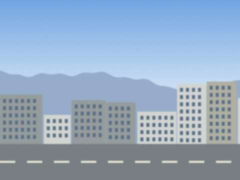

May202014
Tuesday, May 20th, 2014 at 7:45 pm by Erkin
We registered the guest house! Patent from the city: three rooms, breakfast only. We painted, new beds from the bazaar, a shower that works (most days). The name is from the old walnut tree in the courtyard: Jangak.
First guests: a family from Talas who came for the cathedral, and two Polish tourists with big backpacks who came through the Uzbek side and could not believe that there are Christians here who pray facing north. I said: the Pole Star, Irad, that is our name.
Posted in Home | 2 Comments »
Mar162014
Sunday, March 16th, 2014 at 7:20 pm by Erkin
To register a guest house you need: a letter from the city, a fire inspector (he drank four glasses of tea and measured the corridor with his shoes), a patent (the form has 26 lines), a photograph of the building and a statement that there are no fleas. I am not joking, there is a line about it.
All done in six weeks, which in this country is quick. The inspector's only comment: "Put a sign. People get lost in the lanes."
Posted in Home | No Comments »
Dec82013
Sunday, December 8th, 2013 at 6:50 pm by Erkin
Water, again. The pump on our street works about six hours a day, and in the evening everyone fills what they can: buckets, barrels, a bath. I have a new plastic tank on the roof, 500 litres, from the bazaar for 120 som. The pilgrims will need showers in the season.
Mama looks at the tank and says "like a church dome, but ugly". A true observation.
Posted in Home | No Comments »
Aug252013
Sunday, August 25th, 2013 at 9:30 pm by Erkin
For the first time in eight years, the Feast of St. Janyl at home. The night before, the whole hill was candles. The procession from the cathedral, the bells, the icon carried round, the archbishop Mar Ephrem gave the blessing from the steps. Pilgrims from Talas, Nurzhan, from Chicago, from Almaty, all the guest houses full, people sleeping in the courtyards.
Mama says: next year you take guests. We have the three rooms of my father's house that nobody uses. Why not?
Posted in Home | No Comments »
Mar242013
Sunday, March 24th, 2013 at 7:40 pm by Erkin
Plans for the guest house. First thing: the roof of my father's house leaks in three places. Tin from the bazaar, 4 sheets, and a friend of my cousin who has a ladder and no fear. We put it on in a day. In the evening the whole street came to look and gave advice: the nail is too long, the nail is too short, the sheet is crooked. It is not crooked.

Our roof the evening it was finished. Tin from the bazaar, neighbours' advice free.Aigerim says: "You came from Moscow with your hands full of experience. And the neighbours know more than you". Yes.
Posted in Home | No Comments »